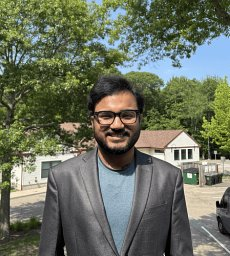

I am a PhD candidate (5th year) at Stony Brook University and a visiting PhD student at Columbia University.
My research develops AI for medical imaging — multimodal learning, foundation and generative models, topological biomarkers, and human–AI collaboration for neuro-oncology and radiology.

PhD Candidate · Medical AI
I am a PhD candidate (5th year) at Stony Brook University and a visiting PhD student at Columbia University. My work sits at the intersection of machine learning and clinical medicine — designing multimodal and foundation models for medical imaging, topology-driven biomarkers, and interpretable, human-in-the-loop diagnostic systems, with applications in neuro-oncology and radiology.
Topology-driven biomarkers and AI frameworks for predicting immunotherapy response from cancer imaging.
View publication →Multimodal generative and foundation-model approaches for molecular marker prediction in precision neuro-oncology.
View publication →Eye-tracking-guided learning and human–AI collaboration for interpretable diagnostic systems in radiology.
View publication →Interested in collaborating on medical AI, or have a question about my research? Reach out.
moinak[dot]bhattacharya[at]stonybrook.edu